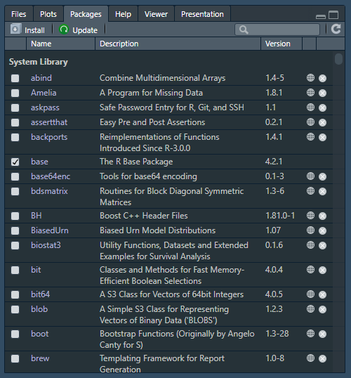

We now know how we can access our data and manipulate it. However, everything that we saw until now is by default available in R. Nonetheless, we cannot expect the maintainers of R (the R Core Team) to implement every idea, optimalization, and statistical method. This is where packages come in.
Packages are libraries of functions created by other people implementing certain methods, ideas, and optimalizations. These packages allow us to implement certain methods, perform certain analyses, and improve our code, without having to program this all ourselves.
Pre-installed packages
Some packages come pre-installed with R. For example, sum() comes from the base package, while sd() comes from the stats package. We can see the currently installed packages in RStudio in the lower right window in the tab ‘packages’, as seen in Figure 1. Mind you that in Figure 1, there might be different packages than in your window, depending on what packages are already or not yet installed.
In Figure 1, you can see a checkbox, which indicates whether a package is loaded (more on that in a few lines), the package name, a description, a version, and buttons to the homepage, and an option to remove the package.

Figure 1: Installed packages
If we want to check out what a package does, we can ask for help on a package in the same way as we ask for help on a function:
?stats
We could also open an extensive overview of a package’s details using library():
library(help ="stats")
This overview shows us not only detailed information on the package, but also the functions the package supplies.
When we talk about packages, for example when asking a question on stack overflow, packages can be denoted with curly brackets. For instance, the base package could be called {base}.
Installing packages
Although the pre-installed packages give us a lot of functionality, we might still want more. Yes, with {stats} we can do a linear regression, but not Cox regression. If we want to perform a Cox regression, we could use the {survival} package. To install it, we can use the below code. You might be prompted to pick a mirror for installation, which basically just means: ‘choose a website identical to the original download website, but with a different server’. This way, you can pick a server in your own country increasing download speeds.
install.packages("survival")
When packages are installed, they will always give the message MD5 sums checked. MD5 is an algorithm that can help identify unintentional data/file corruption (more).
When we install a package, the package is downloaded from the Comprehensive R Archive Network (CRAN), which is the same place where you also downloaded R itself.
R tools
Sometimes you might get an error message when installing a package, which indicates that you need a program called RTools to install the package. To resolve this error, you can install RTools from CRAN.
Package versions
Packages have two versions: the version of the package and the version of R for which they were build. The package version simply indicates the progress of development of that package, but the version of R for which the package was built is more important. There can be three cases:
The package is built for your current version of R: there will be no problem.
The package is built for a newer version of R: you will receive a warning, but other than that, this will not be a problem.
The package is built for an older version of R: you cannot use the package with your current version of R. You can look if there is another package which offers the same functionalities or, less ideally, switch back to an older version of R.
Installing from GitHub
Sometimes, packages do not exist on CRAN yet; the package might not be fully ready yet or still be edited frequently. In such a case, you could install a package from GitHub. To do this, first you need to install {devtools}:
install.packages("devtools")
From {devtools}, we can use the install_github() function to install a package. For instance, if we wanted to install {KMunicate} from GitHub, we could run:
install_github("ellessenne/KMunicate-package")
where ellessenne is the GitHub user’s username and KMunicate-package the repository of the package.
Loading packages
The good thing about installing packages is that we only have to install them once on our device. Once they are installed, at the beginning of your R session, you can load them in using library(). If we wanted to load {survival} after installing it previously, we can do:
library("survival")
We could also load multiple packages at once with library():
library("survival", "stats")
The help function for library() shows that there is also a function called require(). In general, this works similar to library() but is used more often within functions. Whereas library() will return an error if the package is not installed, require() will only give a warning.
Masking
Sometimes, we may get the warning that certain functions become masked:
# Here we set the mirror for downloading, but this is only needed for the tutorial to render: in your own R, you do not need to do this.options(repos =c(CRAN ="https://mirror.lyrahosting.com/CRAN/"))# Install dplyr# We only use quiet = TRUE here to reduce output shown in the tutorial, you do not need to do this in your own code.install.packages("dplyr", quiet =TRUE)
package 'dplyr' successfully unpacked and MD5 sums checked
Warning: cannot remove prior installation of package 'dplyr'
Warning in file.copy(savedcopy, lib, recursive = TRUE): problem copying
C:\Users\rjjan\AppData\Local\R\win-library\4.3\00LOCK\dplyr\libs\x64\dplyr.dll
to C:\Users\rjjan\AppData\Local\R\win-library\4.3\dplyr\libs\x64\dplyr.dll:
Permission denied
Warning: restored 'dplyr'
# Load dplyrlibrary("dplyr")
Attaching package: 'dplyr'
The following objects are masked from 'package:stats':
filter, lag
The following objects are masked from 'package:base':
intersect, setdiff, setequal, union
Loading the package {dplyr} caused, among others, the function filter() from {stats} to be masked. This means that if we call filter(), we will call the function from {dplyr}, not from {stats}, which might have a different functionality. If we still want to use filter() from {stats}, we can prespecify the package with a double colon :::
stats::filter()
In general, we can call functions from installed packages without loading the package, by using ::. Without loading {survival}, we can still call survival::coxph(), so long as {survival} is installed.
Pacman
It can be a hassle to first install packages and then load them with library. By using the package {pacman}, we can simplify this process. We only need to install it once on our device and after that we load any package with:
pacman::p_load("survival", "dplyr")
{pacman} will first check if a package is installed. If it is not, the package will first be installed from CRAN and then loaded, otherwise it will just be loaded. By calling the function p_load() immediately from {pacman} with ::, we do not need to load {pacman} first.
Note that {pacman} does not tell you whether a function becomes masked.
Annotating package loading
Although we might know why we load certain packages, another person reading our code might not. Therefore, it is good practice to annotate for what reason we load certain packages. For example, you can annotate package loading as such:
Sometimes, an R package might get an update to resolve a mistake or to add an extra feature. If we want to update our R packages, we could so from the list of packages in the package view in RStudio. Alternatively, we can just rerun the package installation using install.packages() to update it. Note that we cannot use {pacman} here, as {pacman} will notice the package is installed already and therefore only load it, not (re)install it. To update packages, we can also use update.packages(), although this might not update packages to a version suitable for new major R versions.
Uninstalling
If we want to get rid of a package, maybe to clean up some space on our device, we can remove it using remove.packages().
Sometimes we want to update a package, but that package needs an updated version of a package such as {rlang}. This package is always running in the background, so we will be asked whether we want to terminate the activate session of R so that {rlang} can be updated too. However, if we agree, the R session will restart and immediately load {rlang} again, as this is a package that is always loaded. Therefore, to update packages when they need an updated version of {rlang} (or similar cases), first we need to use remove.packages() to uninstall {rlang}, then reinstall {rlang}, and then update the package we wanted to update originally.
A warning
Although packages are a great way of avoiding writing all kinds of code ourselves, they do not come without their warnings.
Dependencies
Almost all R packages are built using another R package. This is why installing {dplyr} actually installs a lot of other packages, which are all required to allow {dplyr} to function. These are called dependencies. Because packages are dependent on other packages, deprecation of one package might lead to another package not working anymore. Although this is not likely to happen with commonly used packages such as {dplyr}, sometimes this might still cause a package we want to use not to work anymore (or the package we want to use itself is deprecated). Dependencies can become dangerous quickly, as talked about shortly here and here.
Deprecate: to withdraw official support for or discourage the use of (something, such as a software product) in favor of a newer or better alternative. Link.
Trust
Anyone can write packages for R, including you and me. On the one hand, this means that everyone can contribute their code to the ease of all other R users. However, this also means that individuals with malicious intent can create R packages. Therefore, you should always be careful when installing R packages. Although CRAN is an archive with many trusted packages, it is not a protection against malicious packages or a guarantee of safety. More on this can be read here.
Exercises
1. Installing a new package
Install the package {tidyverse}.
Answer
# Answer 1: using {pacman}pacman::p_load("tidyverse")# Answer 2: using install.packages()# We only use quiet = TRUE here to reduce output shown in the tutorial, you do not need to do this in your own code.install.packages("tidyverse", quiet =TRUE)
Warning: package 'tidyverse' is in use and will not be installed
2. Loading a new package
Now load the package {tidyverse}
Answer
# Answer 1: using {pacman}, the package is already loaded after installing# Answer 2: using library() after install.packages()library("tidyverse")
Next topic
Now that we know the basics of R packages, let’s start looking at how we can harness their power to load our own data.